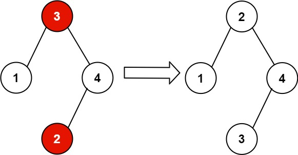

99. 恢复二叉搜索树
中序遍历找逆序对：第一个逆序的大数记进 first，最后一个逆序的小数记进 second，交换这两个值即可。
思路
- 合法 BST 的中序严格递增；交换两个值后最多出现两处逆序。
- 中序走到
cur时若prev.val > cur.val：first只在第一次记下prev（大数），second每次都刷新成cur（最后就是最后一个逆序的小数）。 - 两处逆序（不相邻交换）：first=前的大数、second=后的小数；只有一处（相邻交换）：first、second 恰好是这一对。
- 最后
swap(first.val, second.val)，不动结构。
图解
最优解
1class Solution {2 private TreeNode prev; // 中序遍历里上一个访问的结点3 private TreeNode first, second; // 第一个逆序的大数 / 最后一个逆序的小数4 5 public void recoverTree(TreeNode root) {6 prev = null;7 first = null;8 second = null;9 inorder(root);10 // 只交换这两个结点的值，树的结构不动11 int t = first.val;12 first.val = second.val;13 second.val = t;14 }15 16 private void inorder(TreeNode node) {17 if (node == null) return;18 inorder(node.left);19 // prev > cur 就是一处逆序：first 只记第一次的大数，second 一直刷新成最后一次的小数20 if (prev != null && prev.val > node.val) {21 if (first == null) first = prev;22 second = node;23 }24 prev = node;25 inorder(node.right);26 }27}题目
给你二叉搜索树的根节点 root ，该树中的 恰好 两个节点的值被错误地交换。请在不改变其结构的情况下，恢复这棵树 。
示例 1：

输入：root = [1,3,null,null,2] 输出：[3,1,null,null,2] 解释：3 不能是 1 的左孩子，因为 3 > 1 。交换 1 和 3 使二叉搜索树有效。
示例 2：

输入：root = [3,1,4,null,null,2] 输出：[2,1,4,null,null,3] 解释：2 不能在 3 的右子树中，因为 2 < 3 。交换 2 和 3 使二叉搜索树有效。
提示：
- 树上节点的数目在范围
[2, 1000]内 -231 <= Node.val <= 231 - 1
进阶：使用 O(n) 空间复杂度的解法很容易实现。你能想出一个只使用 O(1) 空间的解决方案吗？
题面取自力扣当前版本。
数据快照 2026-11-04。题面版权归力扣所有，本站点仅供本人学习使用，请勿对外发布。